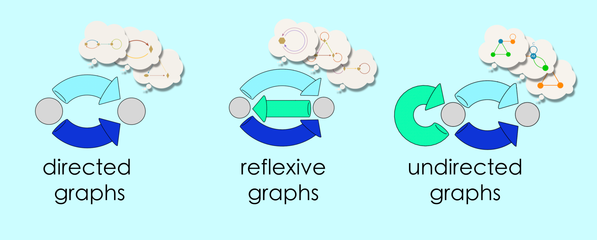
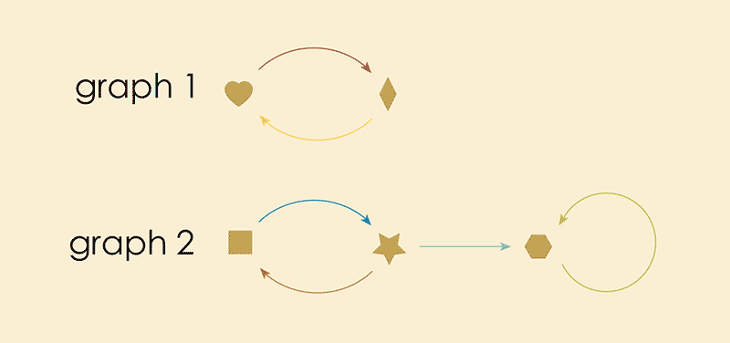
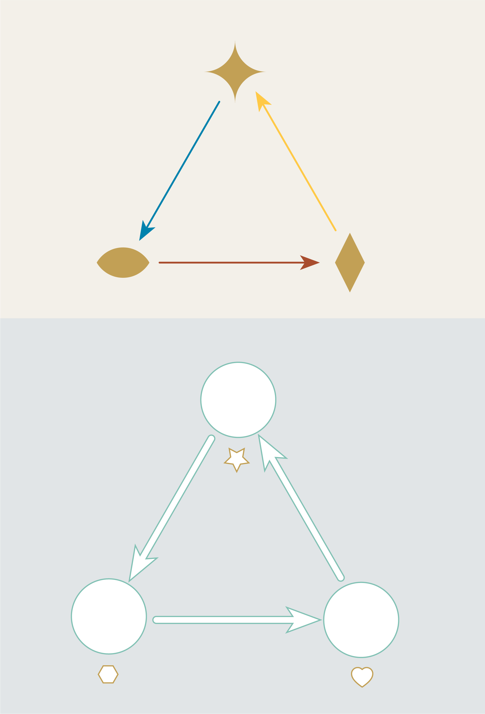
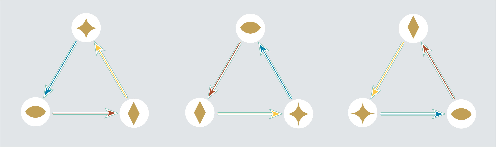
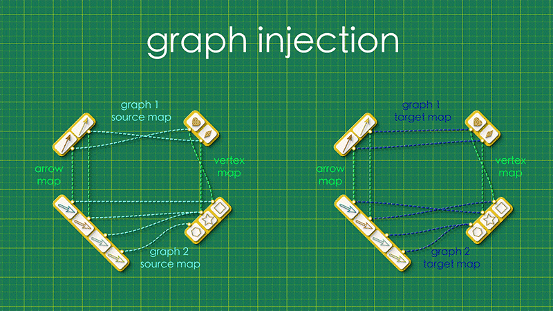
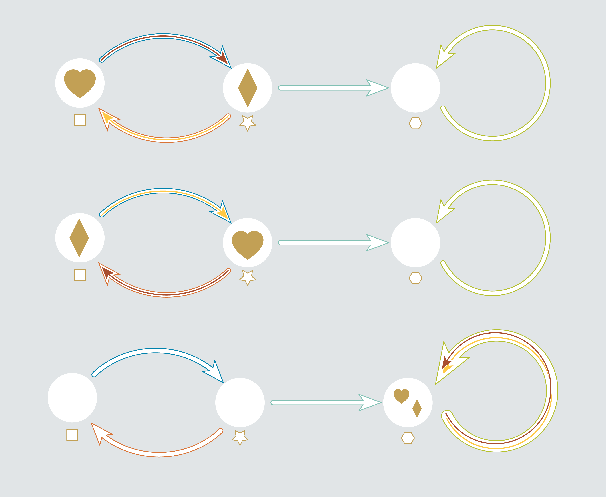
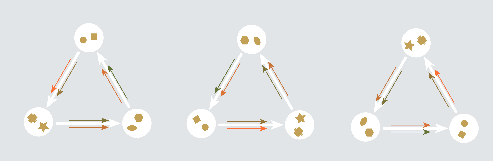
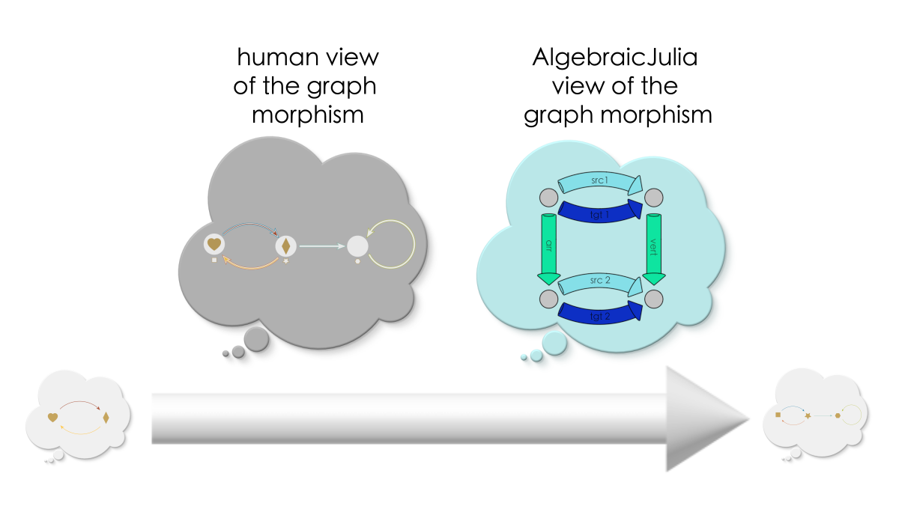

Chapter 4: Categories#
4.1 Introduction#
For any given a schema there will be many possible instances. Below we show a few of the instances for each of our three graph schemas.
{kind=link}
Of course, each of these schemas actually have an infinite number of possible instances (graphs can be arbitrarily big!). It isn’t practical to show every instance, but it is possible to just visualize them in your imagination, all floating in space, one endless swarm of things the schema might refer to.

In our ongoing quest to think about things in terms of relationships we should look at these thought bubbles, each floating in isolation from the others, and ask ourselves, “How are these instances related to one another?”
In this chapter we will develop a powerful answer to this question.
Let’s set this swarm of thought bubbles aside for now and return to it at the end, armed with a new understanding of how its instances are related. At that point we will be ready to move up the fourth rung or in our ladder of abstactions (our last, mercifully!), from schemas to categories.
Attention
Hang in there! You’re almost at the top of the ladder.
4.2 Graph Injections#
Graph injections, concretely#
In Chapter 1 we saw an example of a directed graph which described the layout of a ski resort. In this account, you could ride the ski lift up and down the mountain or ski from the top of the mountain into a nearby village.
But suppose we visit this ski resort in the Summer when there’s no snow. At this time of year the resort lets guests ride up and down the mountain in the lift (which provides a lovely view!), but there is no way to get down the mountain into the village without a snow pack to ski on.
Let’s compare the summer and winter maps for the ski resort.

One way to think about the relationship between these two graphs is that we can turn one into the other. Given the Summer map I can turn it into the winter map by adding the additional vertices and arrows associated with travelling to the village. On the other hand, given the Winter map, I can create the Summer map by deleting the arrows and vertices associated with the village.
This is what we might call a “procedural” way of thinking about the Summer and Winter maps; you imagine step-by-step procedures that could be applied to transform one map into the other. In order to make our way towards “relational” thinking we are going to recommend different way of looking at these two graphs.
Note how the Summer graph is basically contained inside of the Winter graph. For the Summer graph to be a “part” of the Winter graph means, in effect, that we can map the Summer graph into the Winter graph, taking vertices to vertices and arrows to arrows.

We call this a “graph injection”. In order to visualize injections clearly let’s introduce some new visuals.
First let’s redesign the vertices and arrows of graph 2 to be white outlines, moving the colors and shapes out of the way. These outlines will “recieve” the components of graph 1.

The process of placing the first graph inside of the second graph now looks like this:
{kind=link}
The final result gives us an complete picture of "what went where" in our injection. We sometimes call this the "image" of the first graph in the second.
An important detail about graph injections is that a graph is not allowed to come apart when getting injected. All arrows must stay attached to their source and target vertices through this process in order to avoid the DANGLING EDGE CONDITION and preserve the integrity of any underlying model.

Puzzles#
Puzzle 1
How many ways can you inject the graph on the left into the graph on the right?

Puzzle 1 Solution:
The triangle can be injected in three different orientations.

Puzzle 2
How many ways can you inject the graph on the left into the graph on the right?

Puzzle 2 Solution:
Twelve?
Pause and Ponder!
What strategies did you use to count the injections? Were you systematic or did you do it through trial and error? Could you design an algorithm that a computer could use to solve these problems for you?
Graph injections as data#
What is the data that defines a graph injection? We can actually capture all of the important details with a pair of maps. The first is a “vertex map”, connecting each vertex in graph 1 with its destination vertex in graph 2. The second is an “arrow map” which identifies where the arrows from graph 1 land inside the arrows of graph 2.

These two maps capture all the relevant information about the injection.
Recall our DANGLING EDGE CONDITION: For these maps to represent a proper injection the arrows of the injected graph have to stay attached to their source and target vertices. What conditions must be true in order to ensure that a graph doesn’t come apart on entry?
To answer this, let’s arrange our maps into a square, with the source maps for graph 1 and graph 2 running horizontally and the “arrow map” and “vertex map” running vertically:

Pause and Ponder!
Let your eyes follow the dashed lines around the figure. Do you see any “patterns” in this system of connections?
Note how the dashed lines seem to flow “out” from the arrows in the upper left and flow “in” to the vertices at the lower right. Starting from any arrow in the upper left, there are two paths you can take around this square: an upper route and a lower route. Let’s focus on a specific arrow and consider what these routes “mean”. (We’ll label the endpoints as “A” and “V”)
Upper route

Reading across the top we have that the red arrow has the heart as its source. Reading down the right side we see that the heart gets sent to the square vertex in graph 2. So the square is “the vertex that receives A’s source.”
Lower route

Reading down the left we have that the red arrow from graph 1 gets sent to the blue arrow from graph 2 (In other words, the blue arrow is its “image”). Reading across the bottom we see that the blue arrow has the square vertex as its source. So the square is “the source of the image of A.”
To complete the picture, let’s now revisit to our DANGLING EDGE CONDITION. “Coming apart” means, literally, that a vertex and an arrow that were connected in graph 1 are not connected when they land in graph 2. Suppose an arrow gets separated from its source by an attempted injection. For that arrow, the two routes around the square will look something like this:

That is, what it “means” for a graph to get broken is precisely that “the vertex that receives A’s source” is different from “the vertex that is the source of A’s image.”
So we can actually DEFINE a graph injection with a closed loop condition: starting from any arrow in the upper left, the paths going either way around the square will always form a closed loop.

Of course, these same arrow and vertex maps must also form closed loops with the target maps. All together, this is the complete set of “data” describing the injection:
{kind=link}
Going up a level of abstraction, a schema that describes this general in general looks like this:

We have once again captured an idea–graph injections–in terms of a schema and some commutativity conditions. But we’re not quite done! In the next section we’ll see that graph injections aren’t the only thing captured by this schema…
4.3 Graph Morphisms#
General morphisms#
In Chapter 1 we saw an example of a directed graph which described who’s turn it was to do the dishes. In this account, Paul and Toni originally took turns. Then, eventually, their new roommate Tuco moved in and took over dishes duty. As it turns out, Paul and Toni are both right handed while Tuco is left handed. Thus, there is another directed graph which also accurately describes the chore progression, but now in terms of the handedness of dish-washer.

The second model is a “coarse grained” version of the first. It is consistent with the first model but contains fewer details (ie it does not tell us which right handed person is doing the dishes at any given moment). This coarse-graining can be captured by the following way of mapping the first graph into the second:
Coarse graining
Send the
PaulandTonivertices to get merged into a single vertex,Righties.Send the arrow representing the chore passing from
PaultoToniand the arrow representing the chore passing fromTonitoPaulto get collapsed to a single self-looping arrow onRighties.

We call this a “graph morphism”, a way of stuffing one graph inside of another that allows for the merging together of vertices/arrows. (Injections are just a special case of graph morphisms that don’t collapse any of the graph components).
It may seem like collapsing parts of the directed graph this way would be an undesirable thing to do. After all, we have to be so careful about breaking a graph, which would violate our DANGLING EDGE CONDITION and ruin any underlying model. Doesn’t crushing our graph pose a similar risk?
It turns out that merging graph components is different from breaking them apart. Under the right circumstances, merging parts of a graph won’t actually pose any danger to the integrity underlying model.


Although the arrows in the above graph are doubled up, they’re still pointing from the correct sources and pointing to the correct target vertices. The connectivity of the graph is preserved.
////GRAPHIC SHOWING RULES ABOUT WHAT CAN AND CANNOT BE MAPPED
More Puzzles#
Puzzle 3
We have seen that Graph 1 can be mapped into Graph 2 with the following injection:
How many other morphisms are there from Graph 1 to Graph 2?
We’ve programmed this problem into the executable code below. When you think you know the answer, execute code and see if you and AlgebraicJulia agree.
using Catlab.CategoricalAlgebra, Catlab.Graphs, Catlab.Graphics
Graph1 = Graph()
add_vertices!(Graph1, 2)
add_parts!(Graph1, :E, 2, src=[1,2], tgt=[2,1])
Graph2 = Graph()
add_vertices!(Graph2, 3)
add_parts!(Graph2, :E, 4, src=[1,2,2,3], tgt=[2,3,1,3])
countTheMorphisms = length(homomorphisms(Graph1, Graph2))
Puzzle 3 Solution:
There are three distinct morphisms from Graph 1 to Graph 2; two injections and one way of collapsing the whole graph down to one vertex.

As a human, you look for the answer to this puzzle by reasoning about the shape of the directed graph. AlgebraicJulia looks for its answer by trying to count all of the pairs of vertex maps and arrow maps which complete the commutative squares in the graph morphism schema.

These are very different approaches but they both arrive at the same answer.
Puzzle 4
How many ways can this triangle be mapped into this hexagon?

Does AlgebraicJulia agree?
hexagon = Graph()
add_vertices!(hexagon, 6)
add_parts!(hexagon, :E, 6, src=[1,2,3,4,5,6], tgt=[2,3,4,5,6,1])
triangle = Graph()
add_vertices!(triangle, 3)
add_parts!(triangle, :E, 3, src=[1,2,3], tgt=[2,3,1])
countTheMorphisms = length(homomorphisms(triangle, hexagon))
Puzzle 4 Solution:
Trick question! There are no ways of mapping the triangle into the hexagon without breaking the DANGLING EDGE CONDITION.
Note how AlgebraicJulia knows when you’ve asked it to find something that doesn’t exist!
Puzzle 5
What about the other way around? How many ways can this hexagon be mapped into this triangle?

countTheMorphisms = length(homomorphisms(hexagon, triangle))
Puzzle 5 Solution:
Three!

The hexagon can get “doubled up” into the shape of a triangle, and placed into the triangular graph in any of three orientations.
Puzzle 6
How many ways can the graph on the left into the graph on the right?

Graph3 = Graph()
add_vertices!(Graph3, 2)
add_parts!(Graph3, :E, 2, src= [1,1],tgt= [1,2])
Graph4 = Graph()
add_vertices!(Graph4, 4)
add_parts!(Graph4, :E, 5, src=[1,1,1,1,4], tgt=[1,2,3,4,4])
countTheMorphisms = length(homomorphisms(Graph 3, Graph 4))
Puzzle 6 Solution:
There are five morphisms - three injections and two ways of collapsing to a self-loop
Puzzle 7
This puzzle is the same as puzzle 6, except in the AlgebraicJulia code below we’ve stipulated that graphs are ReflexiveGraphs instead of DirectedGraphs. This implies the presence of additional self loops (shown in light grey), which changes the number of possible morphisms.

Graph5 = ReflexiveGraph()
add_vertices!(Graph5, 2)
add_parts!(Graph5, :E, 2, src= [1,1],tgt= [1,2])
Graph6 = ReflexiveGraph()
add_vertices!(Graph6, 4)
add_parts!(Graph6, :E, 5, src=[1,1,1,1,4], tgt=[1,2,3,4,4])
countTheMorphisms = length(homomorphisms(Graph 5, Graph 6))
Puzzle 7 Solution:
Seven; Three injections and four maps to self-loops.
Note how AlgebraicJulia succeeds at counting these morphisms correctly. Moreover, it uses the same mechanism as for directed graphs, no need to write specialized code for reflexive graphs something something.
4.4 The category of instances#
Now that we know what graph morphisms are, we’re now ready to move up the last rung in our ladder of abstractions, from “blueprints” to “categories!”
Let’s revisit the graph morphism schema and look closely at an instance:

Note how the top of this square contains the data for graph 1 and the bottom is the data for graph 2. The overall blueprint represents a morphism of graph 1 into graph 2. It almost feels like an arrow pointing from the top to the bottom.
In chapter 3 we introduced ‘chunky arrows’ as a way to hide the messy details of our maps. We’ll do something similar here, defining a new kind of arrow that encompasses all the details of a graph morphism.

Attention
We know what you’re thinking! “Another kind of arrow?! At another level of abstraction?!”
This is the last one.
Promise.
When we see an arrow like this between two graph instances, we understand that it represents some specific morphism taking the first into the second. But notice that we now have two different ways of interpreting that idea. For us, graph morphisms are about the geometric process of bundling one graph up inside of another. For AlgebraicJulia, graph morphisms are about certain patterns of maps and closed loops.
{kind=link}
We each have our own “language” for what a graph morphism is,
The geometric view is spatial and visual, intuitive for humans to think about. Whereas AlgebraicJulia’s view is more abstract but can be readily worked with in computational terms. The exact correspondance between these views means that if we only think about graphs in terms of graph morphisms then everything we think can be encoded in AlgebraicJulia.
The crucial thing is that although our ways of looking at this abstract structure are different, we are nonetheless accessing precisely the same abstract structure.
For instance, in Puzzle 3 above, we asked AlgebraicJulia a question about morphisms. We gave it the data of two graphs and asked it to count up all the morphisms between them. AlegbraicJulia correctely found three.
{kind=link}
It’s as if it were able to go look through the universe of relationships and retrieve all the arrows that fit our description. AlgebraicJulia is like a magic genie that has access to this space. If you can phrase what you want in terms of closed loops, AlgebraicJulia can retrieve the data.
The universe of relationships.

When we interpret these thought bubbles
This universe of thought bubbles and arrows is called the category, in this case the “category of directed graphs.”
It’s the really the universe of all graphs and all the morphisms between them. There are patterns that exist here.
Now the only trick is figuring out something interesting that can be said entirely in terms of morphisms. And that’s exactly what we’re going to do in the next chapter!
Footnotes and References#
In this chapter and the last we have seen that lot of ideas that can be captured by connecting maps together and then declaring some commutativity conditions. Commutative diagrams are the bread and butter of category theory. We will not explore the general notion of commutativity in much depth here. For a thorough yet elementary introduction to this topic we recommend Lawvere and Schanuel’s Conceptual Mathematics.[1]